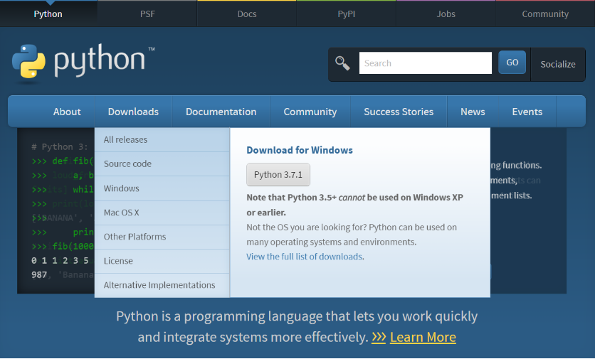

Um algoritmo é um conjunto de instruções simples e claras. Uma sequência de passos que ajuda a chegar a algum objetivo, resolver um problema ou concluir uma tarefa. Por exemplo, o caminho que você costuma fazer da sua casa até a escola, uma receita culinária, o processo de comprar alguma coisa em uma loja. Todas essas coisas possuem passos simples, instruções claras do que devemos fazer para que a nossa tarefa seja realizada.
Uma maneira de fazer o computador realizar tarefas específicas. Os computadores precisam de instruções específicas para conseguir completar uma tarefa, então sempre que você criar um algoritmo, verifique se os passos estão claros o suficiente para que o computador entenda o que você quer.
Uma linguagem de programação muito popular, que pode ser usadas de diversas formas.
Python é capaz de fazer desde operações matemáticas simples até programas complexos de computador, jogos ou aplicativos para celulares. Todas essas coisas são feitas utilizando funções e operações que o Python disponibiliza.
Para começar a escrever ou executar programas em Python, será necessário seguir alguns passos. Lembrando que é necessário ter acesso à Internet no computador no qual deseja baixar e instalar o Python.
Download do programa de instalação:
1. Abra seu navegador.
2. Digite https://www.python.org/ na barra de endereços e vá para o site oficial do Python.
3. Passe o mouse por cima do link Downloads.
4. Clique na opção com a versão mais atualizada, como na imagem a seguir:

Executando o programa de instalação:
1. Após o arquivo ser baixado, procure por ele na pasta (geralmente fica na pasta Downloads). Dê um duplo clique nele para executar e instalar o Python e o IDLE.
O IDLE é um programa que tornará mais fácil sua experiência com o Python. Você pode usar o IDLE para digitar e executar seus programas Python.
2. Talvez apareça um Aviso de Segurança. Se você vir uma janela de Aviso de Segurança (ou Security Warning), confirme que deseja continuar.
O Windows está apenas informando que o software está tentando instalar algo em seu computador.
-----INSERIR IMAGEM AQUI-----
3. Uma janela surgirá, e você terá a opção de escolher entre instalar o Python para todos os usuários ou somente para você. Caso não seja permitido instalar para todos os usuários
em sua escola, curso ou trabalho (ou se simplesmente não funcionar), tente instalar somente para você. Se quiser instalar para todos os usuários, deixe a opção Install launcher for all users
marcada, caso não queira, apenas a desmarque. Caso apareça a opção Add Python to PATH, não é necessário se preocupar com ela agora. Mas geralmente deixamos esta opção marcada.
-----INSERIR IMAGEM AQUI-----
4. Clique em Install Now. Novamente, se aparecer alguma janela de Aviso de Segurança, basta confirmar, para que a instalação continue.
Uma tela de carregamento deve aparecer logo em seguida, bem parecida com a imagem a seguir.
-----INSERIR IMAGEM AQUI-----
5.Sua instalação está pronta. Você deverá ver algo parecido com uma janela parecida com a da imagem abaixo. Cliquem em Close para sair do programa de instalação.
-----INSERIR IMAGEM AQUI-----
Testando o Python:
1. Acesse o menu Iniciar > Programas > Python 3.x (onde o x se refere ao número da versão que você baixou) > IDLE (Python 3.x). Se estiver usando o Windows ou versões
superiores, você poderá clicar no botão Windows/Iniciar, acessar a ferramenta de pesquisa e digitar IDLE.
2. A tela de editor deverá aparecer. Este programa é o shell Python, onde você pode digitar seus códigos e executá-los, além de poder ver os resultados imediatamente.
3. Digite print(“Olá, Python!”) e tecle ENTER.
4. O shell Python deverá responder com Olá, Python!, conforme mostra a figura abaixo.
-----INSERIR IMAGEM AQUI-----
Agora seu computador já está pronto para criar e executar programas Python!
Primeiro programa em Python: Este programa simples mostra na tela a frase “Gosto de brincar!”. xO comando print serve para mostrar algo na tela, como palavras, frases, símbolos ou valores.